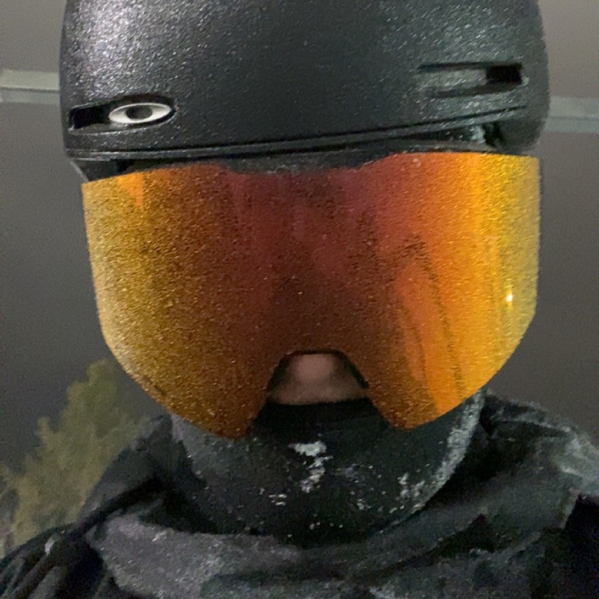

À propos
Horaire
Professions
Kb2plus
Sujet
Galerie
Dubeault Charles
Groupe 01
Collège Lionel Groulx
100, rue Duquet Sainte-Thérèse QC J7E 3G6
Mon adresse couriel: 202331075@edu.clg.qc.ca
Mon interet futur c'est d'acheter un garage avec mes amis pour s'y retrouver et faire de la mecanique entre amis. Il y a aussi le fait
que je veux etre capable de me garder du temps dans le futur pour faire du sport comme le ski.

Mon TP1
Mon TP2
Labo1
Labo2
Labo3
Labo4
Labo5
Connaissances en Web
Je suis capable de créer un site web et de le mettre en ligne.
Je suis capable d'ajouter et modifier le style d'une page web.
Connaissance en programmation
En C#, je suis capable de faire des fonctions, des tableaux 2D et des connaissances de base en SFML.
Connaissance en système d'exploitation
Dans Linux je suis capable de gérer les utilisateurs et le système de fichier.
Dans Windows je suis capable de gérer les utilisateurs, le système de fichier et gérer les disques de stockages de l'ordinateur.
Charles Dubeault
Décembre 2024
Sources